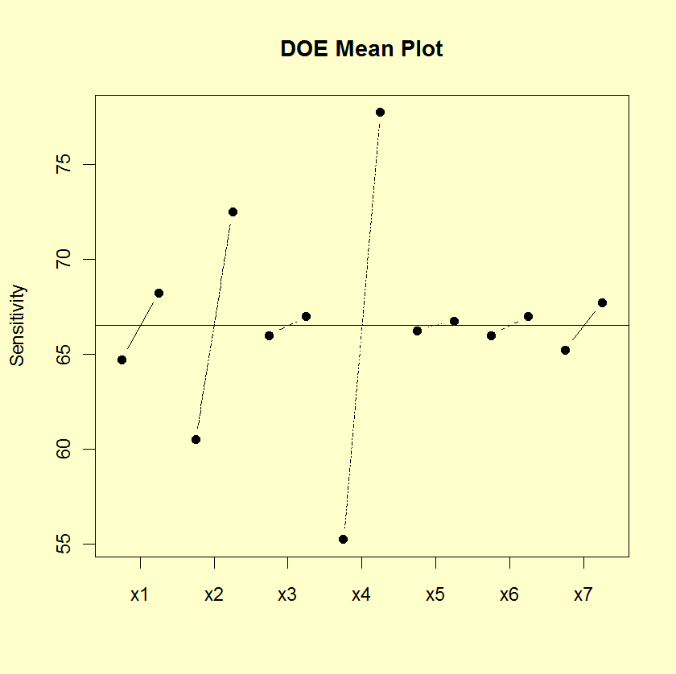
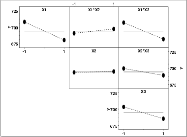

|
1.
Exploratory Data Analysis
1.3. EDA Techniques 1.3.3. Graphical Techniques: Alphabetic
|
|||
|
Purpose: Detect Important Factors With Respect to Location |
The DOE mean plot is appropriate for analyzing data from
a designed experiment, with respect to important factors,
where the factors are at two or more levels. The plot
shows mean values for the two or more levels of each factor
plotted by factor. The means for a single factor are
connected by a straight line. The DOE mean plot is a
complement to the traditional
analysis of variance
of designed experiments.
This plot is typically generated for the mean. However, it can be generated for other location statistics such as the median. |
||
|
Sample Plot: Factors 4, 2, and 1 Are the Most Important Factors |

This sample DOE mean plot shows that:
|
||
|
Definition: Mean Response Versus Factor Variables |
DOE mean plots are formed by:
|
||
| Questions |
The DOE mean plot can be used to answer the
following questions:
|
||
|
Importance: Determine Significant Factors |
The goal of many designed experiments is to determine which factors are significant. A ranked order listing of the important factors is also often of interest. The DOE mean plot is ideally suited for answering these types of questions and we recommend its routine use in analyzing designed experiments. | ||
| Extension for Interaction Effects |
Using the concept of the scatter plot
matrix, the DOE mean plot can be extended to display
first-order interaction effects.
Specifically, if there are k factors, we create a matrix of plots with k rows and k columns. On the diagonal, the plot is simply a DOE mean plot with a single factor. For the off-diagonal plots, measurements at each level of the interaction are plotted versus level, where level is Xi times Xj and Xi is the code for the ith main effect level and Xj is the code for the jth main effect. For the common 2-level designs (i.e., each factor has two levels) the values are typically coded as -1 and 1, so the multiplied values are also -1 and 1. We then generate a DOE mean plot for this interaction variable. This plot is called a DOE interaction effects plot and an example is shown below. |
||
| DOE Interaction Effects Plot |

This plot shows that the most significant factor is X1 and the most significant interaction is between X1 and X3. |
||
| Related Techniques |
DOE scatter plot DOE standard deviation plot Block plot Box plot Analysis of variance |
||
| Case Study | The DOE mean plot and the DOE interaction effects plot are demonstrated in the ceramic strength data case study. | ||
| Software | DOE mean plots are available in some general purpose statistical software programs, although the format may vary somewhat between these programs. It may be feasible to write macros for DOE mean plots in some statistical software programs that do not support this plot directly. | ||